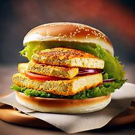

Kitchen Tips
- 🔪Cooking Tips
- 🧼Cleaning Tips
- 🧊Storage Tips
Recipe: Paneer Burger

Ingredients
- 200g paneer (cut into thick round slices or squares, about burger patty size)
- 2 tbsp cornflour
- 2 tbsp all-purpose flour
- Spices: chili powder, turmeric, garam masala, salt
- Water (for batter)
- Bread crumbs
- Oil (for frying)
- 2 burger buns
- Lettuce, onion, tomato slices
- Cheese slices (optional)
- Mayo & ketchup
- Butter (for toasting)
Instructions
- In a bowl, mix cornflour, maida, chili powder, turmeric, garam masala, and salt.
- Add water slowly to make a medium-thick batter (not too runny).
- Dip each paneer slice into the batter, coat it well.
- Roll in breadcrumbs evenly for a nice crispy crust.
- Heat oil in a pan. Shallow or deep fry the paneer until golden and crispy.
- Drain on paper towels.
- Slice burger buns in half and toast them on a pan with a little butter until golden.
- Spread mayo or desired sauce on both bun halves.
- Layer lettuce, crispy paneer patty, cheese slice (optional), tomato slices, onion rings.
- Drizzle some ketchup or extra mayo on top.
- Cover with the top bun.
- Serve hot with fries or chips and your favorite drink.